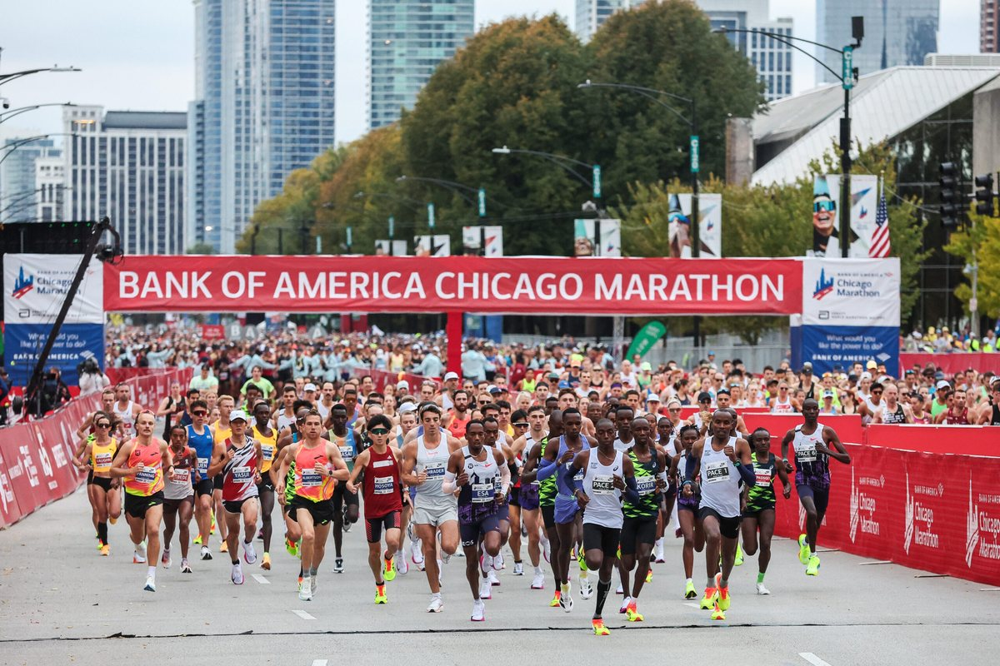

34th Ward · Marathon Weekend
Chicago Marathon Sunday: Street Closures Across the Ward, and Where to Cheer
The Bank of America Chicago Marathon takes over downtown and much of the 34th Ward on Sunday, October 11. Here's what neighbors need to know about closures, times, parking, and getting around, plus a spot to cheer close to home.

More than 55,000 runners are expected for the 2026 Bank of America Chicago Marathon on Sunday, October 11, with the professional fields starting at 7:30 a.m. and Grant Park opening to runners at 5:30 a.m. For neighbors, the weekend means street closures across much of the ward, parking and tow restrictions, and a very different Sunday commute, along with a chance to cheer the runners close to home.
What to Know: Street Closures & Times
Marathon day, Sunday, Oct. 11
Most streets along the route close to traffic at 6 a.m. Many reopen by about 4 p.m., but some stay shut later, Jackson Drive into the evening and Balbo Drive through Monday afternoon.
Abbott Chicago 5K, Saturday, Oct. 10
Loop street closures run roughly 6:30 to 9:30 a.m.
Parking and towing
No-parking and tow zones are enforced along both routes, beginning 1 a.m. Saturday along the 5K route and 1 a.m. Sunday along the marathon route. If your car is towed, call 312-744-4444.
Route change this year
To avoid State Street construction, runners head down Dearborn Street from Grand Avenue to Jackson Boulevard.
Closure and reopening times are approximate and can change. Check the city's notice or chicagomarathon.com before you travel.
Where to cheer in the ward
The 34th Ward office is hosting a cheer station at Mary Bartelme Park, on the Adams Street side, starting at 8 a.m. Sunday, with music and sign-making. It's an easy way to catch the runners passing through the neighborhood without going downtown.
Getting around
DuSable Lake Shore Drive and the expressways stay open. On race morning, the CTA 'L' trains are the easiest way around downtown, Metra is adding extra Sunday service, and buses that cross the course reroute from about 6 a.m. to 4 p.m. If you can walk or take transit instead of driving, Sunday morning is the day to do it.
Full coverage
For the complete street-by-street closure lists and course map:
- Block Club Chicago: Road closures and parking restrictions
- NBC Chicago: Street closures list and full course map
- CBS News Chicago: Route changes and road closures
- Official: Bank of America Chicago Marathon